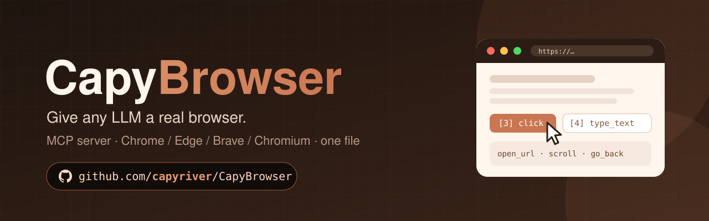
A single-file MCP server that drives the Chrome, Edge, Brave or Chromium you already have. Built for small local models — even a 4B model on a laptop can search, read, click and fill forms.
uvx --from git+https://github.com/capyriver/CapyBrowser capybrowser
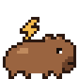
Why CapyBrowserNo Playwright, no Selenium, no Node — one Python file and the browser you already have.
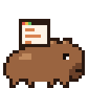
Every page becomes a short view: visible text plus numbered [id] elements, capped at ~3,500 characters.
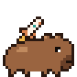
uvx downloads everything on first run. Works on Windows, macOS and Linux with Chrome, Edge, Brave or Chromium.
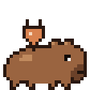
Add GitHub, Notion, files, databases or any MCP server in capy.yaml — the model reaches them through three compact router tools.
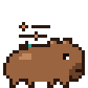
capybrowser ui: add connectors from templates, test tools, manage secrets and see exactly what the model sees.
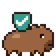
Separate browser with a fresh profile, DevTools on 127.0.0.1 only, tokens via ${VAR} and masked in every answer.
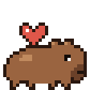
Crashed or hung browser restarts and reopens the page. Popups, dialogs, overlays, SPAs and input masks just work.
Three steps. No accounts, no API keys.
# Windows (PowerShell) powershell -ExecutionPolicy ByPass -c "irm https://astral.sh/uv/install.ps1 | iex" # macOS / Linux curl -LsSf https://astral.sh/uv/install.sh | sh
{
"mcpServers": {
"capybrowser": {
"command": "uvx",
"args": ["--from",
"git+https://github.com/capyriver/CapyBrowser",
"capybrowser"]
}
}
}Restart the app and ask: “Search the web for the latest Python release and open the official page.”
A local, offline web panel. Runs on your computer only, protected by a one-time session key.
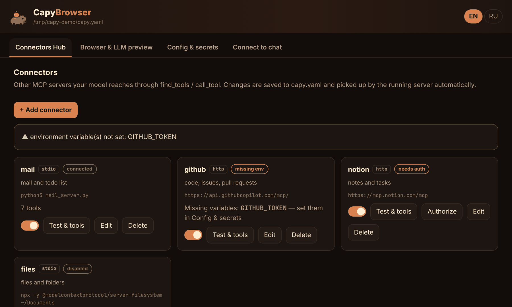
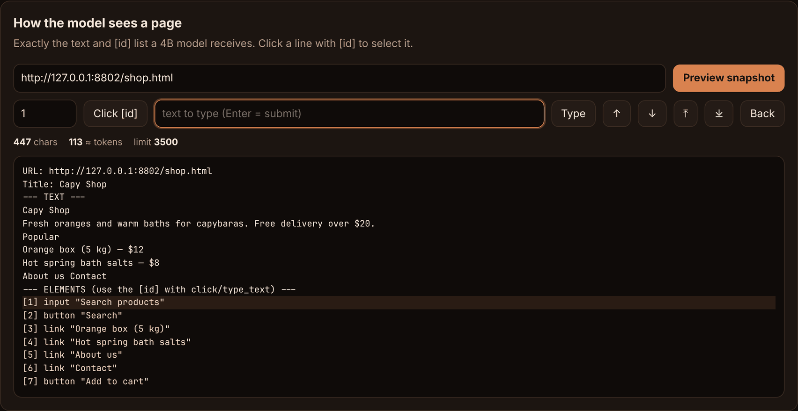
uvx --from git+https://github.com/capyriver/CapyBrowser capybrowser ui
One file: browser settings and every MCP server you use. Your app starts only CapyBrowser; the model gets 6 browser tools plus list_connectors, find_tools and call_tool. Edits are picked up live.
# model sees: find_tools("create an issue") # -> github.create_issue(repo: string, title: string, body?: string) call_tool("github.create_issue", {"repo": "me/app", "title": "Bug"})
browser: lang: ru-RU max_chars: 3500 # good for 4B models mcp_servers: github: type: streamable-http url: https://api.githubcopilot.com/mcp/ auth: type: bearer token: ${GITHUB_TOKEN} # from .env notion: type: streamable-http url: https://mcp.notion.com/mcp auth: {type: oauth} files: command: npx args: ["-y", "@modelcontextprotocol/server-filesystem", "~/Documents"]
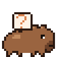
FAQYes — that is the main goal. It is tested end-to-end with Qwen 3 4B Instruct in Ollama on CPU: search, multi-page navigation, logins, forms, scrolling, errors.
No. It starts a separate browser with a temporary profile that is deleted on exit. Set profile_dir only if you want the agent's own logins to persist.
Google Chrome, Microsoft Edge, Brave, Chromium and Vivaldi on Windows, macOS and Linux. Firefox and Safari are not supported (CapyBrowser speaks the Chrome DevTools Protocol).
Only to the websites the model opens and to DuckDuckGo/Bing for web_search. No telemetry, no account, no API key.
Yes, MIT licensed and open source.